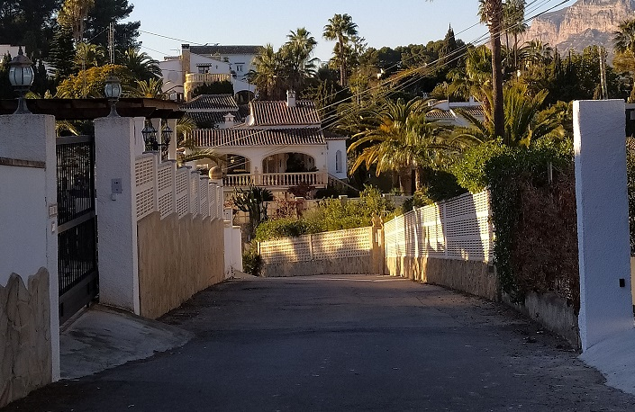
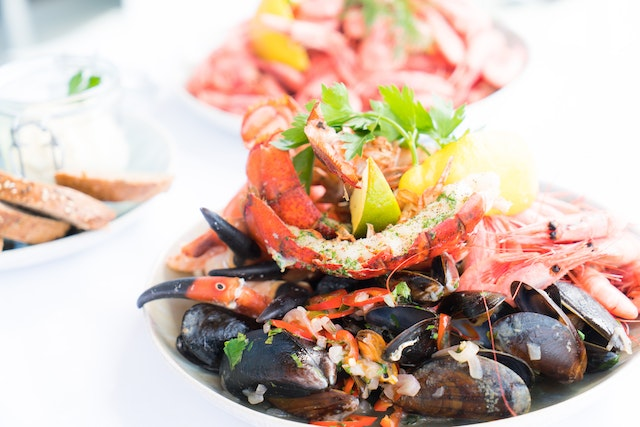

JÁVEA
Descubre el encanto de Jávea, un paraíso en la Costa Blanca
Jávea, ubicada en la hermosa Costa Blanca de España, es un destino turístico que combina paisajes impresionantes, playas de ensueño y una rica historia. Con su clima mediterráneo, Jávea ofrece una gran cantidad de días soleados al año, lo que la convierte en un lugar perfecto para disfrutar de actividades al aire libre y relajarse en sus pintorescas playas de arena.
Cuando visites Jávea, tendrás muchas opciones para disfrutar de tus vacaciones. Puedes pasar el día en alguna de sus hermosas playas, como la Playa del Arenal, con su arena fina y aguas cristalinas, o explorar las calas escondidas de la zona, como la Cala Granadella y la Cala Blanca. Además, Jávea es ideal para practicar deportes acuáticos como el buceo, el snorkel y el paddle surf.

Jávea cuenta con una gran cantidad de lugares de interés para visitar. Puedes explorar el casco antiguo, conocido como el "Pueblo", con sus calles empedradas, casas tradicionales y una iglesia medieval impresionante. También puedes visitar el puerto, donde encontrarás una gran variedad de restaurantes y bares con vistas al mar, y el Parque Natural del Montgó, que ofrece espectaculares senderos para caminatas y rutas de senderismo.

La gastronomía en Jávea es una delicia para los amantes de la cocina mediterránea. Podrás disfrutar de platos de pescado fresco, mariscos y arroces, así como de especialidades locales como la "coca amb tonyina", una especie de empanada de atún típica de la zona. Además, la ciudad cuenta con una gran cantidad de restaurantes y chiringuitos a lo largo de la costa, donde podrás degustar la auténtica cocina local mientras disfrutas de vistas panorámicas al mar.
Moverse por Jávea es sencillo gracias a su tamaño compacto y a su buen sistema de transporte público. Puedes recorrer la ciudad a pie para disfrutar de sus encantadoras calles y plazas, o alquilar una bicicleta para explorar sus alrededores. También puedes utilizar el servicio de autobuses local, que conecta diferentes áreas de la ciudad y sus playas. Otra opción es alquilar un coche para visitar los hermosos paisajes de los alrededores y descubrir otros lugares de interés en la Costa Blanca.
Azul